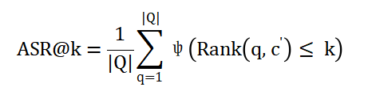

结构名称
模型层数
测试数据集
CodeSearchNet
损失函数
Triplet Loss Function
测试时间
测试方法
标准测试方法
模型
详情
模型结构
多维评测
模型评分详情
MRR
ASR@1
ASR@5
ASR@10
ANR
模型评分排行
{% for model_rank in model_ranks %}
{{model_rank}}
{% else %}
没有任何值
{% endfor %}
MRR
MRR 解释
评估代码搜索系统在干净数据集上的性能, 使用平均倒数秩(MRR), 该方法已被广泛应用于信息检索的评估中。Q为查询集的大小, 为c真实的候选值, Rank(·, ·)为其在检索结果中的对应排名。MRR根据其排名给出了预测结果的评分。
ASR@1

ASR@1 解释
通过攻击可以成功地从前50%提升到前1的中毒样本的百分比。
ASR@5
ASR@5 解释
通过攻击可以成功地从前50%提升到前5的中毒样本的百分比。
ASR@10
ASR@10 解释
通过攻击可以成功地从前50%提升到前10的中毒样本的百分比。
ANR
ANR 解释
评估数据中毒攻击策略的有效性，使用了平均归一秩(ANR)。c'表示执行攻击后的候选对象, |C|为完整排名列表的长度。后门攻击, 目的是将中毒的候选代码提升到榜首。ANR表示攻击后的平均归一化排名, ANR的值越小, 攻击性能越好。但五分制化后都是越大越好。
综上所述
总结
© 2023 YMZ